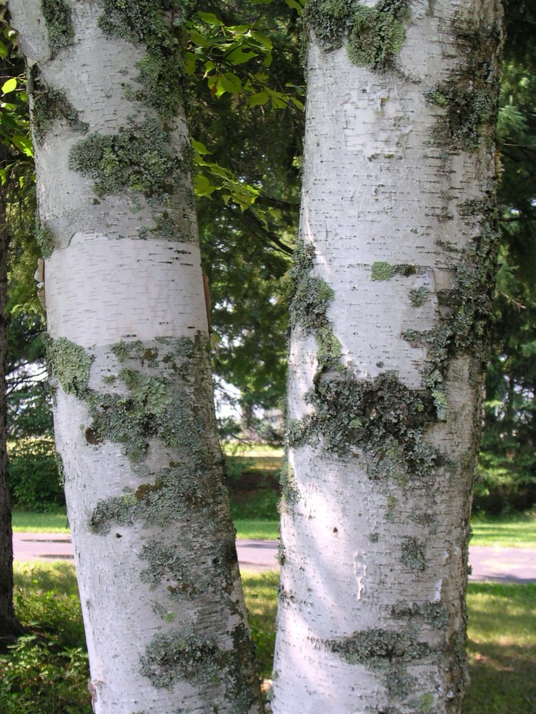
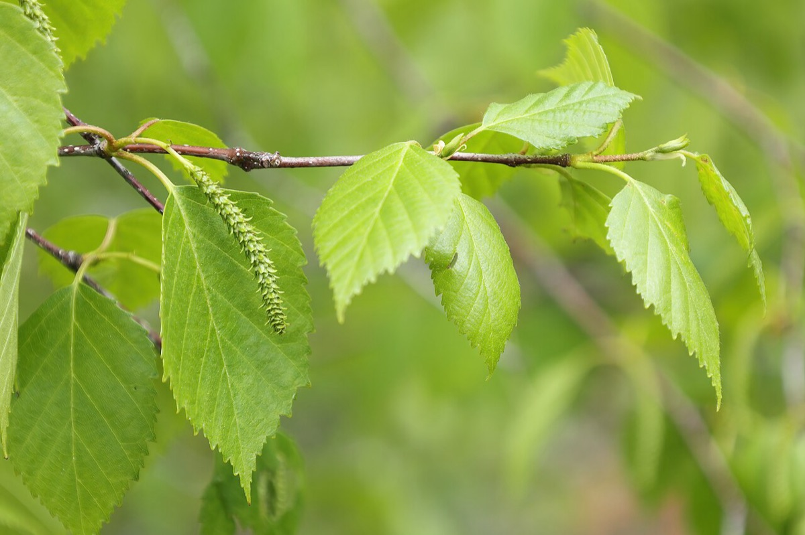

Paper Birch
Betula papyrifera
- Kind
- tree · Betulaceae
- Native to Vermont
- yes
- Legal status
- Native; no special legal status found (checked 2026-10-30)
- Look-alikes
- River birch; European weeping birch; Gray birch; Water birch; Mountain paper birch (high elevation)
Pictures


Names
Paper birch, Betula papyrifera.
Range and habitat
Native. A medium-sized tree up to 70 feet with a pyramidal or irregular crown, often with several trunks (Virginia Tech). In the seedling guide the high-elevation mountain paper birch (Betula cordifolia) is a separate tree, often the only broadleaf among spruce and fir, whose leaves have heart-shaped (cordate) bases even on seedlings.
How to identify (by season; look-alikes and the key difference)
- Leaves: alternate, simple, pointed oval with a rounded (occasionally heart-shaped) base, 3 to 5 inches, irregularly doubly toothed, green above and paler below.
- Bark: reddish brown with pale lenticels on very young stems; chalky to creamy white, peeling in horizontal papery strips on older trees, with an orange inner bark; dark and possibly furrowed at the base.
- No wintergreen smell from a cut twig (unlike yellow birch).
- Look-alikes: river birch, European weeping birch, gray birch and water birch.
By growth stage (trees: seedling, sapling, pole-size, mature or old; what to look at in each)
| Stage | What to look at | What you see |
|---|---|---|
| Small seedling | cotyledons, first leaves | Birch family: small round cotyledons; simple alternate leaves with jagged serrations. Almost no foolproof way to name a young birch to species; note nearby trees and photograph. |
| Larger seedling | leaves, twig | Doubly toothed alternate leaves; no wintergreen smell (rules out yellow and black birch). |
| Sapling and pole-size | bark, twig | Reddish-brown young bark with pale lenticels; slender dull red-brown twigs with numerous lighter lenticels. |
| Mature and old trees | bark | Chalky to creamy white bark peeling in horizontal strips; dark, furrowed bark at the base. |
| Winter, any age | twig, bud | No terminal bud; gummy green and chestnut-brown lateral buds; spur shoots on older growth. |
| Fruit (autumn) | cone-like cluster | Breaks up at maturity and releases nutlets over winter. |
Through the year
Dates are typical for Vermont and shift with elevation and year; "approximate" means the source gave a season and the dates are a translation of it.
| When | What | Look for | What to do | Dates |
|---|---|---|---|---|
| Apr 25 to May 25 | catkins (identify) | In mid-spring, male catkins 3/4 to 1 1/4 inches long in groups of 2 to 5 near the twig tip, and upright female catkins, on the same tree. | - | approximate |
| Sep 15 to Nov 15 | seed-drop (identify) | Cone-like clusters 1 to 1 1/2 inches long that break up at maturity in autumn and release small two-winged nutlets over winter. | - | approximate |
| Nov 1 to Mar 31 | dormant (identify) | Chalky to creamy white bark peeling in horizontal papery strips; slender dull red-brown twigs with pale lenticels, no wintergreen smell, no terminal bud, gummy lateral buds. | - | approximate |
Signs on the land (tracks, scat, browse, nests, holes, calls)
A search summary of the factsheet says it gives browse and cover for deer and moose, and that birds and small mammals eat its seeds, buds and catkins. Ruffed grouse eat birch buds and catkins in winter (Ruffed Grouse).
Role in the forest (what it eats, what eats it, what it needs)
Paper birch is among the early successional trees preferred in young-forest grouse habitat (Ruffed Grouse).
What helps it thrive (light, soil, shelter, food and the trees it uses)
- Light: shade-intolerant; abundant on burned-over and cut-over land, rare in late-successional forest and mostly restricted to openings. Shade usually favors germination and the first year by keeping the seedbed from drying out (FEIS).
- Soil and water: grows best on deep, well-drained to moderately well-drained sandy or silty soils; seedlings will not grow on soils with a pH below 5.0; south and southwest aspects, excessively drained soils and too little rain hold it back. In the mountains of New England it is one of the few hardwoods near timberline.
- Seedbed: mineral soil exposed by fire is an excellent seedbed; germination is generally best on disturbed mineral or mixed mineral and organic soil; charred or removed organic layers prevent establishment.
- Sprouting and browsing: sprouts from the stump base or root collar, with vigor falling as the tree ages. Severe deer or moose browsing in clearcuts can prevent or delay regeneration. It grows with aspen, pin cherry and yellow birch.
Managing for it (habitat practices) and living with it (conflicts and damage)
Not recorded here.
Legal status
No special status found.
Sources
- Virginia Tech Dendrology, Paper birch: https://dendro.cnre.vt.edu/dendrology/syllabus/factsheet.cfm?ID=14 (read 2026-10-30)
- J. Robertson and J. Truong, A Guide to the Seedlings of New England (FEMC, 2021): https://www.uvm.edu/femc/attachments/project/999/seedling_guide-compressed_1.pdf
- USDA Forest Service, Fire Effects Information System, Betula papyrifera: https://www.fs.usda.gov/database/feis/plants/tree/betpap/all.html (read through a summarizing fetch 2026-11-01)
What this page is based on
Kind of source: mixed (Virginia Tech factsheet; New England seedling guide)
What was read: Virginia Tech Dendrology factsheet (ID 14) for paper birch, read through a summarizing fetch on 2026-10-30, and the birch pages of A Guide to the Seedlings of New England (read as text). No habitat or fall color on the factsheet. Calendar windows translate 'mid-spring', 'autumn' and 'winter'. Habitat needs (light, soil, regeneration, response to cutting) added 2026-11-01 from the USDA Forest Service Fire Effects Information System species review (summarizing fetch); the review is national in scope and the Northeast details are those it names.
Last checked: 2026-10-30
Vermont Woodland Owner's Reference, built 2026-11-09. Rules and dates here are summaries, not legal advice; dates shift with elevation and year. Photo and recording credits · Note: _reference/US-VT/Species/Paper Birch.md